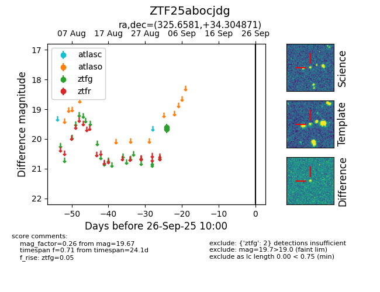

FINK: ZTF25abocjdg
Lasair: ZTF25abocjdg
ALeRCE: ZTF25abocjdg
ZTF25abocjdg (ztf,fink)
equatorial (ra, dec) = (325.6581,+34.30487)
galactic (l, b) = (84.2674,-14.03443)

last ztfg=19.67
2 ztfg detections